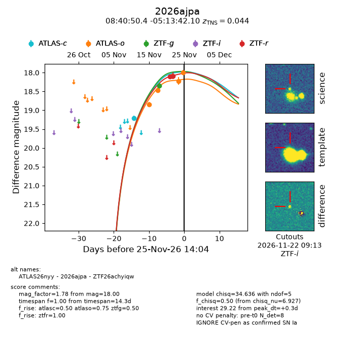
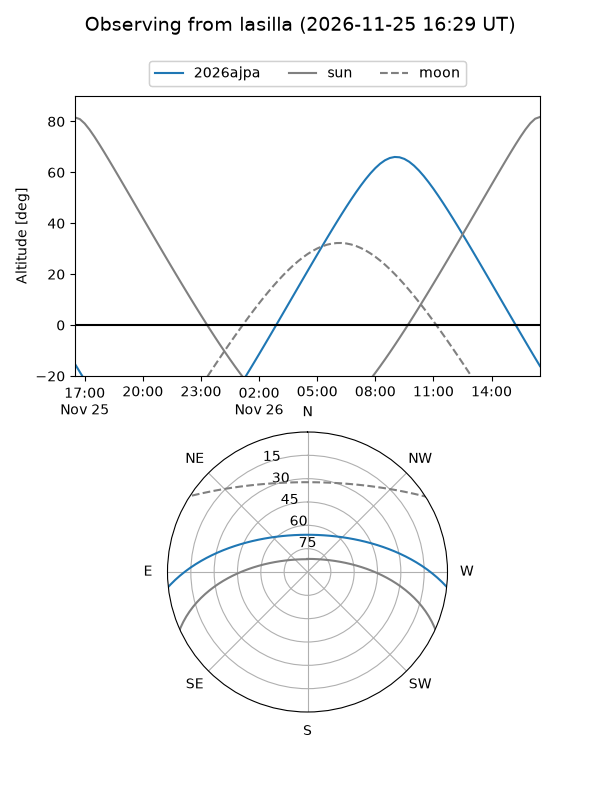
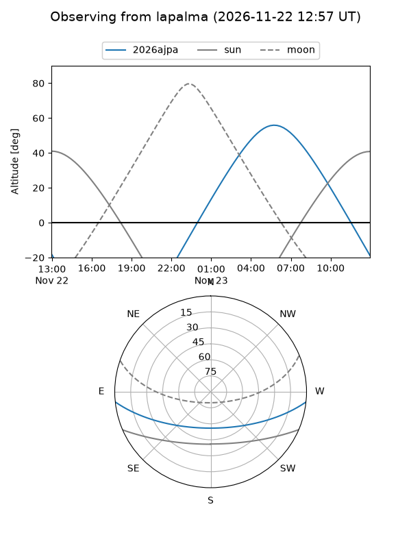
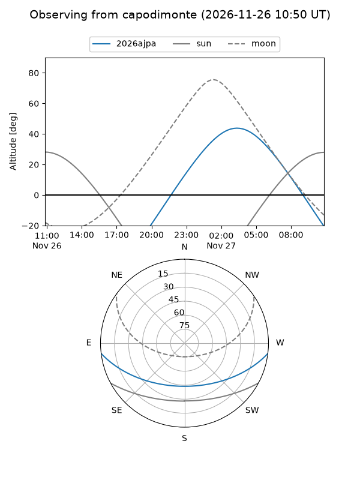
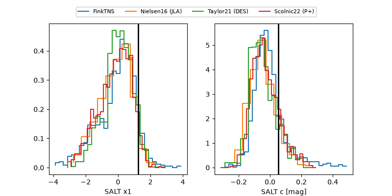

2026ajpa
Target 2026ajpa at 2026-11-25 14:05
Aliases and brokers:
FINK-ZTF: ztf.fink-portal.org/ZTF26achyiqw
Lasair-ZTF: lasair-ztf.lsst.ac.uk/objects/ZTF26achyiqw
ALeRCE-ZTF: alerce.online/object/ZTF26achyiqw
YSE-PZ: ziggy.ucolick.org/yse/transient_detail/2026ajpa
TNS name: wis-tns.org/object/2026ajpa
Direct TNS query: direct search
alt names
ZTF26achyiqw (ztf,fink_ztf)
2026ajpa (tns,yse)
ATLAS26nyy (atlas)
Coordinates:
equatorial (ra, dec) = 130.2099,-5.22836
equatorial (HMS+DMS) = 08:40:50.38,-05:13:42.10
galactic (l, b) = (231.0680,+21.44670)
Flags:
TNS type: SN Ia
TNS redshift: 0.0440
peak dt: +0.3
Photometry:
last atlasc=19.21, atlaso=18.00, ztfg=18.35, ztfr=18.09
1 atlasc, 5 atlaso, 1 ztfg, 2 ztfr detections
Lightcurve

Visibility



Additional plots
